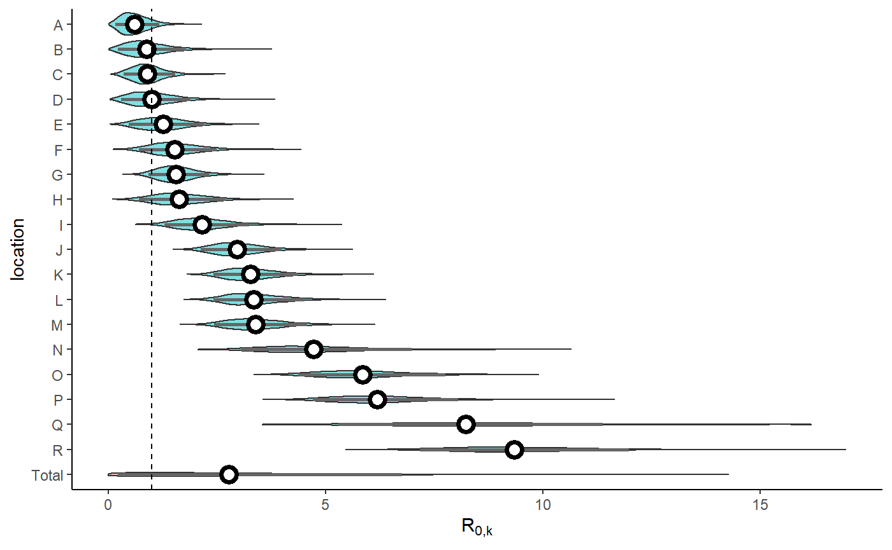
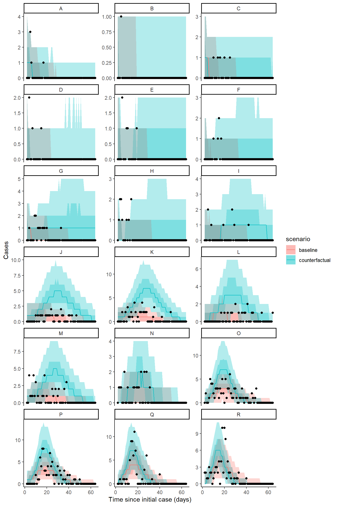
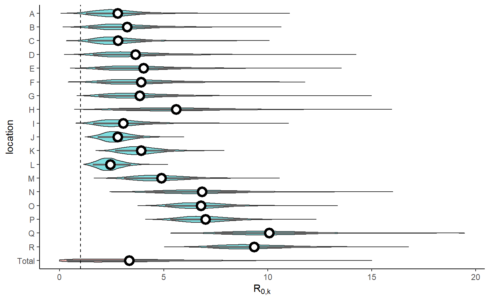

BC outbreak data fitting
BC_outbreak_data_fitting.RmdLoad long-term healthcare outbreak data
Data loaded includes number of cases since outbreak on a given day for each location, the number of outbreaks, the size of the facility, as well as the labels for the outbreaks.
n_outbreaks <- length(BC_LTHC_outbreaks_100Imputs[[100]]$capacity)
outbreak_sizes <- BC_LTHC_outbreaks_100Imputs[[100]]$capacity
outbreak_cases_series <- BC_LTHC_outbreaks_100Imputs[[100]]$time_series
ob_codes <- BC_LTHC_outbreaks_100Imputs[[100]]$Location
outbreak_cases <- BC_LTHC_outbreaks_100Imputs[[100]]$case_matrix
tmax <- 50
# plot cases from matrix
as_tibble(outbreak_cases,rownames="time") %>%
mutate(time = as.double(time)) %>%
pivot_longer(-time,names_to = "location",values_to="cases") %>%
ggplot(aes(x=time,y=cases,color=location)) +
geom_line() +
theme(legend.position = "none")
#> Warning: The `x` argument of `as_tibble.matrix()` must have unique column names if `.name_repair` is omitted as of tibble 2.0.0.
#> Using compatibility `.name_repair`.
Fit model
Fit model including estimating intervention. This code chunk is not run in the vignette, but provides the syntax for how to produce posterior samples. The bc_fit data object is including in the package.
stan_mod <- rstan::stan_model(system.file("stan", "hierarchical_SEIR_incidence_model.stan", package = "cr0eso"))
bc_fit <- seir_model_fit(
stan_model = stan_mod,
tmax,n_outbreaks,outbreak_cases,outbreak_sizes,
intervention_switch = TRUE,
multilevel_intervention = FALSE,
iter = 2000)Model diagnositc checking

rstan::check_hmc_diagnostics(bc_fit$model)
#>
#> Divergences:
#> 0 of 4000 iterations ended with a divergence.
#>
#> Tree depth:
#> 0 of 4000 iterations saturated the maximum tree depth of 10.
#>
#> Energy:
#> E-BFMI indicated no pathological behavior.
# print(mod)
traceplot(bc_fit$model, pars = c("params[1]", "params[2]"), inc_warmup = TRUE, nrow = 2)
rhats <- bayesplot::rhat(bc_fit$model)
rhats[rhats>1.03]
#> <NA> <NA> <NA> <NA> <NA> <NA> <NA> <NA> <NA> <NA> <NA> <NA> <NA> <NA> <NA> <NA>
#> NA NA NA NA NA NA NA NA NA NA NA NA NA NA NA NA
#> <NA> <NA> <NA> <NA> <NA> <NA> <NA> <NA> <NA> <NA> <NA> <NA> <NA> <NA> <NA> <NA>
#> NA NA NA NA NA NA NA NA NA NA NA NA NA NA NA NA
#> <NA> <NA> <NA> <NA> <NA> <NA> <NA>
#> NA NA NA NA NA NA NA
bayesplot::mcmc_rhat(rhats)
#> Warning: Dropped 39 NAs from 'new_rhat(rhat)'.
bayesplot::mcmc_nuts_divergence(bayesplot::nuts_params(bc_fit$model),
bayesplot::log_posterior(bc_fit$model))
Plot model output
# Extract the posterior samples to a structured list:
posts <- rstan::extract(bc_fit$model)
extracted_posts <- hom_extract_posterior_draws(posts) # get object of incidence and zeta
#> Warning in rpois(dplyr::n(), incidence): NAs produced
result <- hom_plot_r0_by_location(extracted_posts=extracted_posts)
#> Warning: Ignoring unknown parameters: fun.y
# plot results
show(result$plot + labs(y=TeX("$R_{0,k}$")))
#> No summary function supplied, defaulting to `mean_se()`
result$table %>%
kableExtra::kbl() %>%
kableExtra::kable_styling(bootstrap_options=bootstrap_options)| location | r0 |
|---|---|
| Total | 2.26 (0.18 - 6.41) |
| 11 | 8.96 (6.9 - 11.64) |
| 1 | 8.32 (5.27 - 11.38) |
| 17 | 5.71 (4.36 - 7.56) |
| 5 | 5.33 (3.99 - 7.2) |
| 8 | 4.27 (2.83 - 6.76) |
| 13 | 3.07 (2.21 - 4.26) |
| 10 | 2.94 (2.19 - 4.03) |
| 4 | 2.83 (2.02 - 3.91) |
| 3 | 2.67 (1.96 - 3.68) |
| 2 | 1.92 (1.16 - 2.94) |
| 12 | 1.38 (0.56 - 2.47) |
| 15 | 1.37 (0.79 - 2.09) |
| 16 | 1.32 (0.59 - 2.25) |
| 18 | 1.06 (0.37 - 2.05) |
| 7 | 0.8 (0.26 - 1.68) |
| 14 | 0.74 (0.3 - 1.37) |
| 9 | 0.68 (0.18 - 1.59) |
| 6 | 0.47 (0.14 - 1.01) |
Plot model fit to incidence
extracted_posts <- hom_extract_posterior_draws(posts) # get object of incidence and r0
#> Warning in rpois(dplyr::n(), incidence): NAs produced
result <- hom_plot_incidence_by_location(extracted_posts=extracted_posts,
outbreak_cases = outbreak_cases)
# plot results
result$plot
#> Warning: Removed 18 row(s) containing missing values (geom_path).
Plot counterfactual scenario
The code below extracts and plots the counterfactual scenario and also provides a summary table of cases by location in the baseline, scenario, where there was no intervention and the difference and proportional difference representing the cases averted. The final row provides a total summary of cases.
result <- hom_plot_counterfactual_by_location(bc_fit,
outbreak_cases = outbreak_cases)
# plot results
show(result$plot)
# show table of results
result$table %>%
kableExtra::kable() %>%
kableExtra::kable_styling(bootstrap_options = c("striped","responsive"))| location | baseline | counterfactual | averted | proportion_averted |
|---|---|---|---|---|
| 1 | 95 (64 - 120) | 111 (87 - 145) | 14 (-15 - 72) | 0.12 (-0.16 - 0.51) |
| 10 | 47 (32 - 63) | 192 (143 - 232) | 145 (98 - 185) | 0.75 (0.65 - 0.83) |
| 11 | 81 (64 - 100) | 88 (69 - 109) | 7 (-16 - 30) | 0.08 (-0.2 - 0.3) |
| 12 | 5 (1 - 12) | 18 (4 - 53) | 12 (-1 - 44) | 0.71 (-0.1 - 0.91) |
| 13 | 32 (20 - 46) | 128 (93 - 158) | 95 (63 - 126) | 0.74 (0.62 - 0.84) |
| 14 | 10 (5 - 18) | 18 (7 - 47) | 8 (-3 - 33) | 0.45 (-0.33 - 0.78) |
| 15 | 14 (7 - 23) | 45 (17.95 - 104) | 31 (6 - 86) | 0.69 (0.29 - 0.86) |
| 16 | 6 (2 - 12) | 18 (5 - 52) | 12 (0 - 42.05) | 0.69 (0 - 0.9) |
| 17 | 94 (73 - 118) | 147 (122 - 173) | 53 (20 - 86) | 0.36 (0.15 - 0.53) |
| 18 | 5 (1 - 11) | 12 (3 - 44) | 7 (-2 - 36) | 0.63 (-0.4 - 0.9) |
| 2 | 9 (4 - 17) | 41 (15 - 74) | 31 (7 - 63) | 0.77 (0.47 - 0.9) |
| 3 | 31 (20 - 45) | 140 (94 - 179) | 108 (64 - 146) | 0.77 (0.65 - 0.86) |
| 4 | 21 (12 - 32) | 90 (59 - 117) | 68 (40 - 95) | 0.76 (0.62 - 0.86) |
| 5 | 82 (62.95 - 105) | 141 (117 - 167) | 58 (27 - 91) | 0.42 (0.21 - 0.57) |
| 6 | 11 (5 - 18) | 15 (7 - 33) | 4 (-5 - 21) | 0.31 (-0.56 - 0.71) |
| 7 | 4 (1 - 9) | 7 (2 - 28) | 4 (-2 - 22) | 0.5 (-1 - 0.9) |
| 8 | 16 (8 - 27) | 40 (23 - 59) | 24 (3 - 42) | 0.6 (0.12 - 0.81) |
| 9 | 3 (0 - 6.05) | 4 (1 - 18) | 2 (-2 - 14) | 0.5 (-2 - 1) |
| total | 572 (514 - 631) | 1279 (1065 - 1519) | 706 (471.95 - 968) | 0.55 (0.44 - 0.64) |
Fit hierarcichal intervention model
Fit model including estimating intervention by each location in a hierarchical design,
bc_fit_zeta <- seir_model_fit(
stan_model = stan_mod,
tmax,n_outbreaks,outbreak_cases,outbreak_sizes,
intervention_switch = TRUE,
multilevel_intervention = TRUE,
iter = 2000)Plot model output - zeta model
# Extract the posterior samples to a structured list:
posts <- rstan::extract(bc_fit_zeta$model)
extracted_posts <- hom_extract_posterior_draws(posts) # get object of incidence and zeta
#> Warning in rpois(dplyr::n(), incidence): NAs produced
result <- hom_plot_r0_by_location(extracted_posts=extracted_posts)
#> Warning: Ignoring unknown parameters: fun.y
# plot results
show(result$plot + labs(y=TeX("$R_{0,k}$")))
#> No summary function supplied, defaulting to `mean_se()`
result$table %>%
kableExtra::kbl() %>%
kableExtra::kable_styling(bootstrap_options=bootstrap_options)| location | r0 |
|---|---|
| Total | 2.92 (0.31 - 7.78) |
| 1 | 9.71 (7.25 - 13.07) |
| 11 | 9.04 (6.86 - 12.51) |
| 17 | 6.55 (4.94 - 8.69) |
| 8 | 6.35 (3.86 - 9.85) |
| 5 | 6.24 (4.58 - 8.52) |
| 12 | 5.09 (2.29 - 9.41) |
| 13 | 4.44 (2.76 - 6.91) |
| 16 | 3.44 (1.57 - 6.87) |
| 18 | 3.37 (1.53 - 7.11) |
| 15 | 3.38 (1.69 - 6.38) |
| 10 | 3.42 (2.3 - 5.03) |
| 7 | 2.99 (1.33 - 6.59) |
| 9 | 2.69 (1.21 - 5.76) |
| 2 | 2.62 (1.42 - 4.88) |
| 14 | 2.44 (1.17 - 4.86) |
| 6 | 2.37 (1.04 - 4.68) |
| 3 | 2.41 (1.57 - 3.63) |
| 4 | 2.25 (1.5 - 3.45) |
Plot hierarchical intervention strength by location (zeta)
result <- hom_plot_zeta_by_location(extracted_posts=extracted_posts)
#> Warning: Ignoring unknown parameters: fun.y
# plot results
show(result$plot)
#> No summary function supplied, defaulting to `mean_se()`
result$table %>%
kableExtra::kbl() %>%
kableExtra::kable_styling(bootstrap_options=bootstrap_options)| location | zeta |
|---|---|
| Total | 0.09 (0.02 - 0.32) |
| 6 | 0.27 (0.13 - 0.51) |
| 9 | 0.21 (0.09 - 0.46) |
| 7 | 0.2 (0.09 - 0.41) |
| 12 | 0.19 (0.1 - 0.33) |
| 18 | 0.18 (0.08 - 0.34) |
| 14 | 0.16 (0.08 - 0.34) |
| 16 | 0.14 (0.07 - 0.28) |
| 15 | 0.13 (0.07 - 0.23) |
| 1 | 0.11 (0.08 - 0.13) |
| 8 | 0.08 (0.05 - 0.12) |
| 13 | 0.07 (0.05 - 0.11) |
| 2 | 0.07 (0.03 - 0.13) |
| 5 | 0.06 (0.04 - 0.08) |
| 10 | 0.06 (0.03 - 0.08) |
| 17 | 0.06 (0.04 - 0.07) |
| 3 | 0.04 (0.02 - 0.06) |
| 11 | 0.03 (0.01 - 0.08) |
| 4 | 0.03 (0.01 - 0.05) |
Plot model fit to incidence - zeta model
extracted_posts <- hom_extract_posterior_draws(posts) # get object of incidence and r0
#> Warning in rpois(dplyr::n(), incidence): NAs produced
result <- hom_plot_incidence_by_location(extracted_posts=extracted_posts,
outbreak_cases = outbreak_cases)
# plot results
result$plot
#> Warning: Removed 18 row(s) containing missing values (geom_path).Plot counterfactual scenario - zeta model
The code below extracts and plots the counterfactual scenario and also provides a summary table of cases by location in the baseline, scenario, where there was no intervention and the difference and proportional difference representing the cases averted. The final row provides a total summary of cases.
result <- hom_plot_counterfactual_by_location(bc_fit_zeta,
outbreak_cases = outbreak_cases)
# plot results
show(result$plot)
# show table of results
result$table %>%
kableExtra::kable() %>%
kableExtra::kable_styling(bootstrap_options = c("striped","responsive"))| location | baseline | counterfactual | averted | proportion_averted |
|---|---|---|---|---|
| 1 | 67 (50 - 89) | 137 (111 - 163) | 69 (36 - 101) | 0.51 (0.3 - 0.65) |
| 10 | 45 (31 - 62) | 205 (138.95 - 245) | 158 (97 - 199) | 0.77 (0.66 - 0.85) |
| 11 | 83 (63 - 103) | 86 (67 - 107) | 3 (-19 - 29) | 0.03 (-0.26 - 0.29) |
| 12 | 6 (2 - 12) | 73 (44 - 97) | 67 (39 - 91) | 0.92 (0.82 - 0.97) |
| 13 | 32 (21 - 47) | 144 (111 - 172) | 111 (79 - 140) | 0.77 (0.66 - 0.86) |
| 14 | 11 (5 - 18) | 148 (32 - 233) | 137 (22 - 221) | 0.92 (0.68 - 0.97) |
| 15 | 15 (8 - 24) | 178.5 (67 - 222) | 163 (53 - 206) | 0.91 (0.79 - 0.95) |
| 16 | 6 (2 - 12) | 75 (23 - 104) | 69 (17.95 - 97) | 0.91 (0.75 - 0.97) |
| 17 | 94 (73 - 120) | 147 (122 - 174) | 52 (15 - 87.05) | 0.36 (0.12 - 0.53) |
| 18 | 5 (1 - 10) | 73 (23 - 102) | 67 (18 - 96) | 0.93 (0.77 - 0.98) |
| 2 | 9 (4 - 17) | 61 (19 - 95) | 51 (11 - 85) | 0.84 (0.53 - 0.94) |
| 3 | 30 (18 - 43) | 115 (50 - 173) | 85 (22 - 142) | 0.74 (0.43 - 0.85) |
| 4 | 20.5 (12 - 32) | 63 (26 - 103.05) | 42 (7 - 82) | 0.66 (0.25 - 0.83) |
| 5 | 82 (63 - 103) | 143 (118 - 168) | 61 (29 - 92) | 0.43 (0.23 - 0.58) |
| 6 | 10 (5 - 17.05) | 181 (35 - 295) | 171 (25 - 284) | 0.94 (0.7 - 0.98) |
| 7 | 4 (1 - 9) | 66 (15 - 98) | 61 (11 - 94) | 0.93 (0.75 - 0.99) |
| 8 | 16 (8 - 26) | 43 (25 - 63) | 27 (6 - 49) | 0.64 (0.22 - 0.84) |
| 9 | 3 (0 - 6) | 43 (9 - 72) | 40 (6 - 70) | 0.94 (0.67 - 1) |
| total | 545 (492 - 600) | 1948 (1470 - 2325.05) | 1402 (924 - 1787) | 0.72 (0.62 - 0.77) |
Create parameter comparison table
res <- create_pub_tables("Fixed intervention"= bc_fit,
"Multiple intervention" = bc_fit_zeta)
res %>%
kableExtra::kable() %>%
kableExtra::kable_styling(bootstrap_options = "striped")| location | r0 Fixed intervention | zeta Fixed intervention | critical_time Fixed intervention | r0 Multiple intervention | zeta Multiple intervention | critical_time Multiple intervention |
|---|---|---|---|---|---|---|
| 18 | 1.06 (0.37 - 2.05) | 0.4 (0.07 - 2.29) | 0.08 (0 - 4.42) | 3.37 (1.53 - 7.11) | 0.18 (0.08 - 0.34) | 6.82 (2.85 - 11.54) |
| 17 | 5.71 (4.36 - 7.56) | 0.42 (0.07 - 2.28) | 4.18 (0.76 - 26.44) | 6.55 (4.94 - 8.69) | 0.06 (0.04 - 0.07) | 33.05 (27.37 - 44.8) |
| 16 | 1.32 (0.59 - 2.25) | 0.4 (0.07 - 2.13) | 0.46 (0 - 5.93) | 3.44 (1.57 - 6.87) | 0.14 (0.07 - 0.28) | 8.44 (3.81 - 13.35) |
| 15 | 1.37 (0.79 - 2.09) | 0.41 (0.07 - 2.26) | 0.57 (0 - 5.54) | 3.38 (1.69 - 6.38) | 0.13 (0.07 - 0.23) | 9.12 (5.45 - 12.75) |
| 14 | 0.74 (0.3 - 1.37) | 0.41 (0.07 - 2.13) | 0 (0 - 1.15) | 2.44 (1.17 - 4.86) | 0.16 (0.08 - 0.34) | 5.22 (1.31 - 9.05) |
| 13 | 3.07 (2.21 - 4.26) | 0.4 (0.07 - 2.29) | 2.79 (0.46 - 16.71) | 4.44 (2.76 - 6.91) | 0.07 (0.05 - 0.11) | 19.87 (16.09 - 24.88) |
| 12 | 1.38 (0.56 - 2.47) | 0.4 (0.07 - 2.27) | 0.53 (0 - 7.09) | 5.09 (2.29 - 9.41) | 0.19 (0.1 - 0.33) | 8.42 (4.79 - 12.73) |
| 11 | 8.96 (6.9 - 11.64) | 0.41 (0.07 - 2.16) | 5.3 (0.99 - 32.3) | 9.04 (6.86 - 12.51) | 0.03 (0.01 - 0.08) | 74.39 (29.33 - 296.1) |
| 10 | 2.94 (2.19 - 4.03) | 0.41 (0.06 - 2.15) | 2.64 (0.48 - 16.6) | 3.42 (2.3 - 5.03) | 0.06 (0.03 - 0.08) | 21.54 (17.8 - 26.65) |
| 9 | 0.68 (0.18 - 1.59) | 0.41 (0.07 - 2.34) | 0 (0 - 1.49) | 2.69 (1.21 - 5.76) | 0.21 (0.09 - 0.46) | 4.42 (1.01 - 9.27) |
| 8 | 4.27 (2.83 - 6.76) | 0.39 (0.07 - 2.15) | 3.71 (0.65 - 21.67) | 6.35 (3.86 - 9.85) | 0.08 (0.05 - 0.12) | 22.29 (16.84 - 34.09) |
| 7 | 0.8 (0.26 - 1.68) | 0.41 (0.07 - 2.22) | 0 (0 - 2.29) | 2.99 (1.33 - 6.59) | 0.2 (0.09 - 0.41) | 5.39 (1.66 - 9.83) |
| 6 | 0.47 (0.14 - 1.01) | 0.41 (0.07 - 2.32) | 0 (0 - 0.01) | 2.37 (1.04 - 4.68) | 0.27 (0.13 - 0.51) | 3.05 (0.23 - 5.76) |
| 5 | 5.33 (3.99 - 7.2) | 0.41 (0.07 - 2.16) | 4.08 (0.79 - 24.74) | 6.24 (4.58 - 8.52) | 0.06 (0.04 - 0.08) | 31.03 (26.09 - 38.64) |
| 4 | 2.83 (2.02 - 3.91) | 0.42 (0.07 - 2.2) | 2.48 (0.45 - 15.33) | 2.25 (1.5 - 3.45) | 0.03 (0.01 - 0.05) | 28.08 (19.85 - 47.52) |
| 3 | 2.67 (1.96 - 3.68) | 0.41 (0.07 - 2.2) | 2.37 (0.43 - 15.17) | 2.41 (1.57 - 3.63) | 0.04 (0.02 - 0.06) | 23.07 (17.48 - 32.15) |
| 2 | 1.92 (1.16 - 2.94) | 0.4 (0.07 - 2.2) | 1.5 (0.15 - 10.38) | 2.62 (1.42 - 4.88) | 0.07 (0.03 - 0.13) | 14.41 (8.35 - 22.15) |
| 1 | 8.32 (5.27 - 11.38) | 0.41 (0.07 - 2.13) | 5.03 (0.94 - 32.11) | 9.71 (7.25 - 13.07) | 0.11 (0.08 - 0.13) | 21.18 (18.04 - 25.15) |
| Total | 0.29 (0.03 - 0.77) | 0.41 (0.07 - 2.22) | NA (NA - NA) | 1.69 (0.72 - 2.77) | 0.09 (0.02 - 0.32) | NA (NA - NA) |